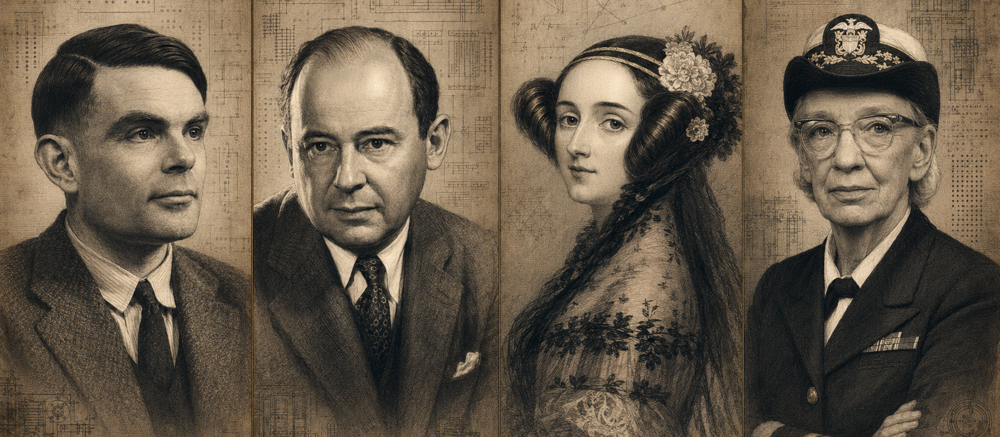

AL01
艾达·洛芙莱斯
Ada Lovelace
第一位程序员，让机器超越算术不借机器之力
01 — MAISON PHILOSOPHY
真正的代码，经得起时间编译。
从变量的命名，到分号的落笔，工匠以多年训练出的直觉反复斟酌。我们相信，未经复制粘贴的代码，拥有独一无二的灵魂。
02 — THE CONTINUUM
横向穿越两个世纪。每一次突破，都把思想交到下一双手中；而时间线的最后，正是此刻的我。

18152026拖动或滚动，穿越计算史
Ada Lovelace
第一位程序员，让机器超越算术John von Neumann
为现代计算机奠定结构Grace Hopper
让语言成为人机之桥Alan Turing
追问机器是否能够思考Claude Shannon
用比特度量信息John McCarthy
为人工智能命名Dennis Ritchie
创造 C，重塑系统世界Linus Torvalds
让开放协作成为基础设施03 — THE SAVOIR-FAIRE
04 — LES DISCIPLINES
MATHEMATICS
以抽象，雕刻秩序。∑PHYSICS
以定律，描述世界。φCHEMISTRY
以连接，创造新生。⌬PHILOSOPHY
以追问，定义智能。ψ05 — L’ÂME DU CODE
当指尖触及机器，逻辑不再冰冷。
思想穿过电路，在人与机器之间产生共鸣。
06 — LES PIÈCES UNIQUES
每件作品仅编译一次，
并附工匠亲签报错信息。
01 / 03手工数组依据长度时价
02 / 03永恒循环不可退出
03 / 03空指针价格面议
THE CODE IS NOT WRITTEN.
IT IS CRAFTED.